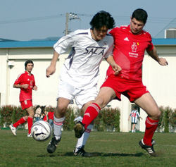
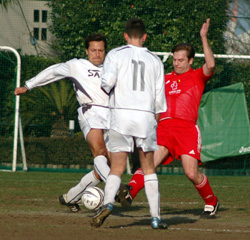

|
YC&AC, Sat 11th March. A draw can feel like a win. A draw can feel like a loss, and just sometimes, a draw can feel like an em…draw…um…or something…
Irrespective of the conditions, the quality of the opposition, or the performance of the officials, the factor that most decides how a draw feels (They have feelings too you know), is the order that the goals are scored in.
The Swiss will doubtless feel that they should have come away with a win from this one, leading as they did from shortly after half time, until within spitting distance of the finish line.
But for Sala, their last minute equaliser felt thoroughly deserved, and was a pleasing way to end a game that hopefully won’t linger long in the memory.
There were, in total, perhaps four chances in the entire match. Shots at goal were somewhat like an endangered species and shots on target all but went the way of the Dodo. The ball, perhaps labouring under the misapprehension that it was filled with helium, seemed to delight in exploring the wide-open spaces of the sky.
In the first half, Sala came closest to scoring when Brian Gallagher’s looping header over the Swiss keeper was spectacularly cleared off the line. Apart from that, there weren’t really any other chances of note from either team, until right at the end of the half, when Dave Pratt sneaked in unmarked at the back post, only to head over. If this served as a wake up call for Sala, they certainly didn’t let it show…Coming straight back out for the second half and falling behind to a headed goal.
Following a free kick from the right, Sala failed to clear their lines, and to track late runners into the box. This cocktail of negligence was happily welcomed by a throng of Swiss players on the edge of the box, one of whom calmly lobbed a header over Sid and into the corner of the net. Sid then had a brief argument with the goalpost, which the goalpost won.
The subsequent ten minutes saw Sala lose all semblance of shape and direction, until Shigeru began to exert a calming influence from the middle of the park. The Sala player was found covering at the back, sprinting onto through balls upfront and still getting through his quota of passes and tackles alongside Andres in the midfield.
As the minutes ticked away, Sala were repeatedly left demoralised, as Kirk mopped up attack after attack and launched the ball all the way back to Sid in the Sala goal. Sid may actually have made an important save at some point in the later stages, but I can’t quite remember it now…
At the other end, perseverance and a lovely nutmeg on Capt. Kirk won Brian Gallagher a corner, but with almost no time left.
Brookey’s delivery was perfect and caused panic in the Swiss defence before somebody finally managed to stab it out for another corner. Brookey whipped it in again, and after a brief game of pinball wizard, the ball broke to Brian, who whacked it in, deservedly getting himself on the score sheet, and stealing a point for Sala.
It turned out to be the very last kick of the game, and on reflection, a draw was probably a fair result, though for those in the white shirts, it felt, just a little bit, like a win.
Oh, and Lenny managed not to get sent off in front of his wife for the first time ever. Which as they say, is nice.
Match photographer: Jonathan Brandt.
Match reporter: Roddy Charles.
|